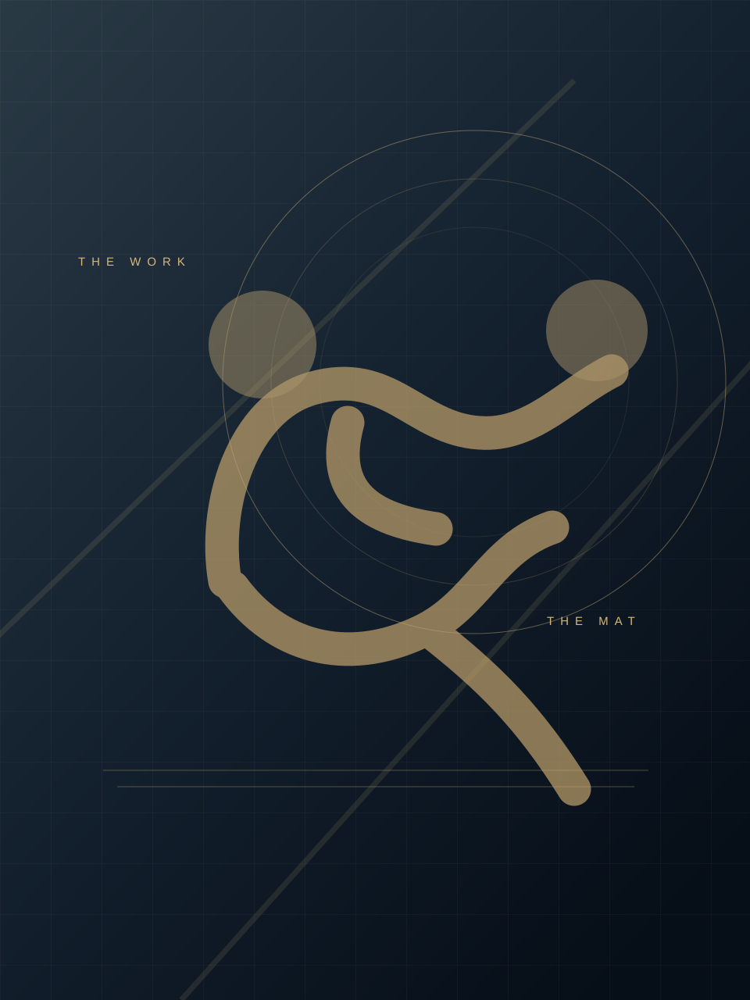
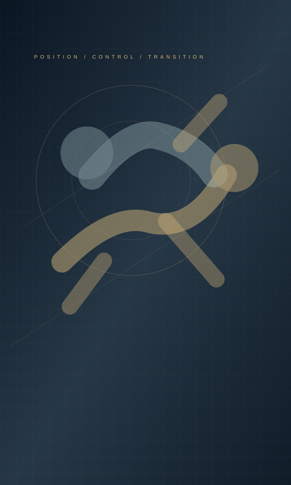

WHITE BELTFAIXA BRANCA
Foundations in movement, consistency and technical fundamentals.Base de movimentos, consistência e fundamentos técnicos.
Year to confirmAno a confirmarI bring competition-tested Brazilian Jiu-Jitsu, disciplined technical instruction and a long-term commitment to the mat — with a focus on contributing to ambitious academies in Texas.Levo jiu-jítsu testado em competições, ensino técnico disciplinado e compromisso de longo prazo com o tatame — com foco em contribuir para academias ambiciosas no Texas.
*Competition names, dates and classifications must match official federation records before publication as verified credentials.*Nomes dos campeonatos, datas e categorias devem corresponder aos registros oficiais das federações antes da publicação como credenciais verificadas.

My journey in Brazilian Jiu-Jitsu began at white belt, where I learned that progress is built through repetition, accountability and patience. Across the blue, purple and brown belt divisions, competition became a measure of preparation — not just a pursuit of medals.Minha jornada no jiu-jítsu começou na faixa branca, quando aprendi que o progresso nasce da repetição, da responsabilidade e da paciência. Nas faixas azul, roxa e marrom, competir se tornou uma forma de medir a preparação — não apenas de buscar medalhas.
My brown-belt career included a silver-medal finish at an IBJJF event in Europe and wins at CBJJ/IBJJF national events. Approximately one year into my black-belt journey, I continue to develop as an athlete while bringing the same technical discipline to the classes I teach.Minha trajetória na faixa marrom incluiu uma medalha de prata em um evento da IBJJF na Europa e vitórias em eventos nacionais da CBJJ/IBJJF. Há aproximadamente um ano na faixa-preta, continuo evoluindo como atleta e aplicando a mesma disciplina técnica às aulas que ministro.
Foundations in movement, consistency and technical fundamentals.Base de movimentos, consistência e fundamentos técnicos.
Year to confirmAno a confirmarNational-event wins and continued competitive development.Vitórias em eventos nacionais e evolução competitiva.
Years to confirmAnos a confirmarA European IBJJF podium finish and national-event success.Um pódio europeu da IBJJF e resultados em eventos nacionais.
Year to confirmAno a confirmarOne year at black belt; active technical teaching and continued progression.Um ano de faixa-preta; ensino técnico ativo e evolução contínua.
Current chapterEtapa atualEvery meaningful achievement deserves a traceable source. The entries below reflect my reported competition history; dates, exact event titles, divisions and source documents must be reconciled with official federation records.Toda conquista relevante merece uma fonte rastreável. Os registros abaixo refletem meu histórico competitivo informado; datas, títulos exatos dos eventos, categorias e documentos devem ser conferidos com os registros oficiais das federações.
| Competition / resultCompetição / resultado | FederationFederação | DivisionFaixa | YearAno | Official proofProva oficial |
|---|---|---|---|---|
| SILVEREuropean event podium — Barcelona*Pódio europeu — Barcelona*Runner-up, event name pending verificationVice-campeonato, nome do evento a verificar | IBJJF | Brown beltMarrom | — | Official bracketChave oficial ↗CertificateCertificado ↗ |
| GOLDNational-level event win*Vitória em evento nacional*Exact competition title to confirmNome exato da competição a confirmar | CBJJ / IBJJF* | Blue beltAzul | — | Official certificateCertificado oficial ↗ |
| GOLDNational-level event win*Vitória em evento nacional*Exact competition title to confirmNome exato da competição a confirmar | CBJJ / IBJJF* | Purple beltRoxa | — | Official certificateCertificado oficial ↗ |
| GOLDNational-level event win*Vitória em evento nacional*Exact competition title to confirmNome exato da competição a confirmar | CBJJ / IBJJF* | Brown beltMarrom | — | Official certificateCertificado oficial ↗ |
Verification protocol: replace “—” with confirmed years, identify the exact tournament and age/weight division, and upload unchanged federation documents. Links activate automatically only when the corresponding files exist. *Reported record, not independently verified by this website.Protocolo de verificação: substitua “—” pelos anos confirmados, identifique o torneio e a divisão de idade/peso exatos e envie documentos sem alteração da federação. Os links são ativados automaticamente apenas quando os arquivos existem. *Histórico informado, não verificado independentemente por este site.

Competition experience has value when it becomes a repeatable learning system. With one year of professional teaching experience, my focus is structured instruction: clear demonstrations, progressive drilling, positional understanding and accountable training.A experiência competitiva gera valor quando se transforma em um sistema de aprendizagem reproduzível. Com um ano de experiência profissional como professor, meu foco é o ensino estruturado: demonstrações claras, exercícios progressivos, compreensão posicional e treinamento responsável.
For a Texas academy, I aim to contribute to lesson quality, student development and a competitive training culture. I am open to discussing athlete-instructor roles and, where responsibilities and experience align, a pathway toward greater coaching leadership.Para uma academia no Texas, pretendo contribuir para a qualidade das aulas, a evolução dos alunos e uma cultura de treinamento competitivo. Estou aberto a funções como atleta-instrutor e, quando responsabilidades e experiência forem compatíveis, a uma trajetória de maior liderança técnica.
Step-by-step instruction and technique refinement.Ensino progressivo e refinamento de técnicas.
Purposeful drills, positional rounds and match preparation.Drills objetivos, treinos posicionais e preparação para lutas.
Potential support for youth or self-defense curricula, subject to demonstrated experience and academy needs.Possível apoio a programas infantis ou de defesa pessoal, conforme experiência demonstrada e necessidades da academia.
Consistency, professional conduct and individual student attention.Consistência, conduta profissional e atenção individual aos alunos.
A public-facing index for federation records and professional materials. Each document should retain its original content, event metadata and source attribution. Sensitive attorney-client records should remain outside this public repository.Um índice público de registros das federações e materiais profissionais. Cada documento deve preservar conteúdo original, metadados do evento e atribuição da fonte. Documentos sigilosos entre advogado e cliente devem ficar fora deste repositório público.
Placement, event name, division and federation identification.Colocação, nome do evento, categoria e identificação da federação.
Bracket, category, opponent records and placement.Chave, categoria, adversários e colocação.
Blue-belt record; additional purple- and brown-belt records appear in the competition table.Registro da faixa azul; os registros das faixas roxa e marrom aparecem na tabela de conquistas.
Training experience, credentials, references and documented roles.Experiência em ensino, credenciais, referências e funções documentadas.
For informational and credential-review purposes only. This portfolio is not a legal filing, does not establish O-1A eligibility on its own, and is not affiliated with or endorsed by USCIS. An immigration attorney should assess the evidence and proposed U.S. role.Destinado apenas à informação e à análise de credenciais. Este portfólio não é uma petição jurídica, não comprova por si só elegibilidade ao O-1A e não possui vínculo nem endosso do USCIS. Um advogado de imigração deve avaliar as provas e a função pretendida nos EUA.
If you lead a Brazilian Jiu-Jitsu academy in Texas and are exploring opportunities for an athlete, technical instructor or future coaching leader, I would welcome a conversation about your program and mutual fit.Se você administra uma academia de jiu-jítsu no Texas e está avaliando oportunidades para um atleta, professor técnico ou futuro líder de treinamento, gostaria de conversar sobre seu programa e a compatibilidade entre nossas propostas.